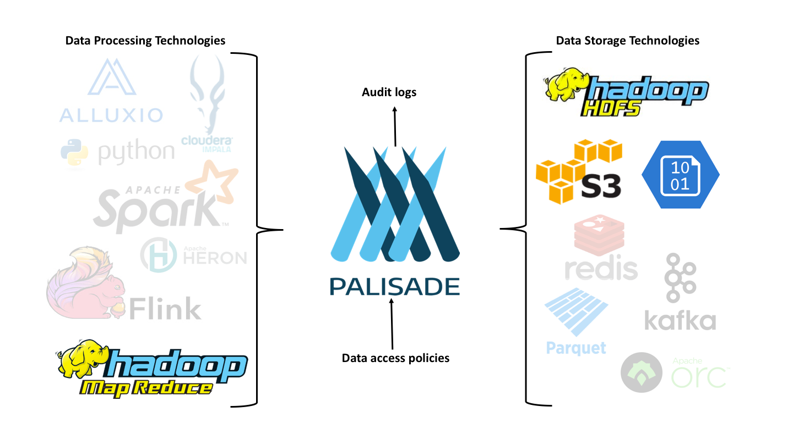

A Tool for Complex and Scalable Data Access Policy Enforcement
Palisade aims to provide a stable framework for defining and enforcing policies for accessing data.
Introduction
Modern organisations can have multiple datasets that are each managed and accessed according to different policies and procedures. This can make it complicated for analysis while still ensuring regulatory compliance. Most technologies "out of the box" do not provide the necessary solution for managing these complex issues for data access. This leads to access to data being overly restrictive with potential insights from data being lost.
Palisade can provide a solution to this problem; It consists of a set of services for enforcing complex data access policies across different datasets and platforms. These services are able to provide modular data access controllers and independent peripheral services to allow policies to be integral to the process a client uses to access data.
Consider the example of a set of datasets may have been assembled for specific purposes. For a given dataset, only particular types of query are permitted for certain types of user. Also, within each dataset a specific user may only be permitted to access a particular subset of the records. Palisade allows the policies for accessing datasets, redacting records and executing the query to be specified independently of the physical data and the platform hosting the data. This will enable the clients to perform queries across the datasets while still conforming to company and regulatory policies.
See the Motivating Scenario for a detailed description of this example scenario, and the Example Library package for the concrete implementation of this example used for testing.
Policies are set per resource and are not changed by the user or context. However, the policies can use the information about the user and context to decide how the data needs to be sanitised for any particular query. This can be applied on a per-field basis, which means that fields in a record can be redacted or masked based on:
- the contents of the record
- the user accessing the record
- the contextual information provided by the user or the system at the time of the query.
Palisade's aim is to provide a stable framework for enforcing policy and auditing requirements for data access requests, while, at the same time, not limiting the solution to any single platform ecosystem. Palisade can be deployed into many different ecosystems such as Hadoop, Kubernetes, AWS, Azure and Google Cloud. As adoption of Palisade grows, then the burden of creating new connectors (between Palisade and new technologies for storing and processing data) can be shared across the community.

If required, Palisade allows an organisation to use centralised services which each deployment of Palisade's data access services can share. This means that your data access policies, audit logs, user account details etc. don't need to be duplicated on every system. Of course, Palisade can still be deployed locally on a per-platform basis.
Additional Information
For a quickstart in using Palisade, see the Quickstart Guide. For more information on Palisade, take a look at the Developer Guide.
For any questions or help please contact using the GitHub Issue tracking system. Go to the Issue page and create and enter your query in a new issue and then submit. We will try to respond as quick as possible in the form of a comment to the issue. Here is the link to Palisade issues.
Status
Palisade is no longer under active development.
License
Palisade is licensed under the Apache 2.0 License and is covered by Crown Copyright.